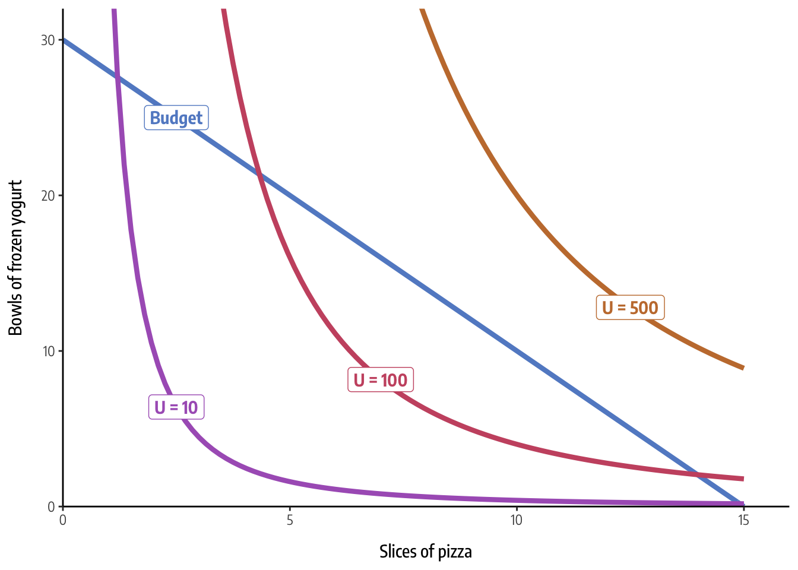

![]()
A year ago, I wrote about how to use R to solve a typical microeconomics problem: finding the optimal price and quantity of some product given its demand and cost. Doing this involves setting the first derivatives of two functions equal to each other and using algebra to find where they cross. I showed how to use neat functions like Deriv::Deriv() and splinefun() and make fancy plots showing supply and demand and it’s pretty cool. I wrote it mostly because I was teaching an introductory microeconomics course and wanted an easy, generalizable, and manual math-less way to make these plots for my students’ exercises and problem sets, and it works great.
I’m teaching microeconomics again this year and decided to tackle a trickier problem that involves curvier curves, more variables, and more math. And the results are even cooler and open the door for more doing math and symbolic algebra directly with R.
Another typical microeconomics problem is to find the optimal level of consumption of two goods, given their prices, your budget, and your preferences for those goods. It involves (1) constructing a budget line that shows the feasible level of consumption, (2) drawing indifference curves that show the combination of goods that give you the same amount of happiness, or utility, or utils, and (3) finding which indifference curve is tangent line and where that happens. The point where the budget matches the indifference curve is the optimal utility maximizing point. The more mathy approach is that we need to find where the slope of the budget line, or marginal rate of transformation (MRT) is equal to the slope of the indifference curve, or marginal rate of substitution (MRS).
For this situation, imagine a mild-mannered professor named Chidi Anagonye who is crippled with decision anxiety (he is also dead). He has to choose the best combination of pizza and frozen yogurt, but doesn’t know what to do! Here’s the information he has:
- He has a budget of $45 and must spend it all.
- Slices of Hawaiian pizza cost $3. We’ll abbreviate this as \(x\).
- Bowls of frozen yogurt cost $1.50. We’ll abbreviate this as \(y\).
- The happiness Chidi gets from eating pizza and frozen yogurt can be modeled with this utility function:
\[ U(x, y) = x^2\ 0.25y \]
Armed with only this information, we can find the optimal number of pizza slices and bowls of yogurt. So buckle up, my little chili babies. Let’s do this with R!
- Step 0: A brief note about math in R
- Step 1: Plot a budget line
- Step 2: Plot utility and indifference curves
- Step 3: Find where the indifference curve and budget line are tangent
- tl;dr complete example
Step 0: A brief note about math in R
R is phenomenal software for statistics and graphics and all sorts of other things, but it was not invented to do higher level algebra and calculus. Expensive programs like MATLAB and Mathematica were invented for this kind of complicated numerical computing (and Wolfram Alpha is really neat! Try searching for “derive 3x^2” there and see what happens!). There are also a bunch of open source computer algebra systems (CAS) that let you do mathy things with formulas, like SageMath, SymPy, and Yacas.
Many of these CAS libraries have interfaces with R, like rSymPy and Ryacas. However, they’re fairly undocumented and rSymPy hasn’t been updated since 2010. Additionally, rSymPy requires rJava (for whatever reason), which is a gigantic headache to install. Ryacas, on the other hand, doesn’t have a ton of dependencies, is actively maintained, and is slightly better documented.
There are like a billion examples of how to use Ryacas here or on StackOverflow, but here are just a few tiny examples to show what it can do:
library(Ryacas)
# Define some variables to work with
x <- Sym("x")
y <- Sym("y")
# Write a formula as a string or R expression
yacas("x^2 + 5")
## expression(x^2 + 5)
yacas(x^2 + 5)
## expression(x^2 + 5)
# Find the derivative of a complicated formula
yacas(deriv(x^2 * (5*y)^3), x)
## expression(2 * (x * (5 * y)^3))
# Find the derivative of an R function (!!!)
neat_function <- function(x, y) x^2 * (5*y)^3
yacas(deriv(neat_function(x, y), x)) # d/dx
## expression(2 * (x * (5 * y)^3))
yacas(deriv(neat_function(x, y), y)) # d/dy
## expression(x^2 * (15 * (5 * y)^2))
# Solve a complicated formula
Solve(x^2 + (5*y) == 0, y)
## Yacas vector:
## [1] y == -(x^2/5)
# Write these yacas things as LaTeX
cat(TeXForm(yacas(neat_function(x, y))))
## x ^{2} \left( 5 y\right) ^{3}What’s really neat about Ryacas is that because it returns expressions, you can use them as pseudo functions within R using Eval(). You can even build wrapper functions with Eval():
deriv_neat_function <- function(my_y, my_x) {
derived <- yacas(deriv(neat_function(x, y), x))
Eval(derived, list(x = my_x, y = my_y))
}
deriv_neat_function(1, 2)
## [1] 500Again, this is just scratching the surface of what Ryacas can do. There are also more powerful CAS libraries, like Python’s SymPy, though it doesn’t currently have a nice interface with R (but you could theoretically use reticulate to feed R objects directly to Python, do mathy things with them, and return them to R).
Step 1: Plot a budget line
With that mathy stuff out of the way, we can finally start figuring out Chidi’s optimal level of consumption. First, we’ll load our libraries, create a custom ggplot theme, and set up some variables to work with Ryacas
library(tidyverse)
library(Ryacas)
# Make a few minor adjustments to theme_classic()
# I'm using Encode Sans Condensed: https://fonts.google.com/specimen/Encode+Sans+Condensed
theme_econ <- function() {
theme_classic(base_family = "Encode Sans Condensed") +
theme(axis.title.x = element_text(margin = margin(t = 10)),
axis.title.y = element_text(margin = margin(r = 10)),
axis.title = element_text(family = "Encode Sans Condensed Medium"))
}
# Make all labels automatically use Encode Sans
update_geom_defaults("label", list(family = "Encode Sans Condensed Bold"))
# Yacas variables
x <- Sym("x")
y <- Sym("y")
U <- Sym("U")To build the budget line, we need to figure out how many pizzas and yogurts Chidi would buy if he spent all his money on each item. We can do this with some simple math:
total_budget <- 45
price_x <- 3
price_y <- 1.5
n_pizza <- total_budget / price_x
n_pizza
## [1] 15
n_yogurt <- total_budget / price_y
n_yogurt
## [1] 30
slope <- -n_yogurt / n_pizza
slope
## [1] -2That’s 15 pizzas or 30 yogurts. We can use this information to build a formula. Since we can draw a line using the \(y = mx + b\) form, we need to figure out the slope (\(m\)) and y-intercept (\(b\)). The y-intercept here is 30, or the number of yogurts he’d eat if x is 0, and the slope is the number of yogurts divided by the number of pizzas, or -2. That means the budget line is:
\[ y = -2x + 30 \]
We’ll write this as an R function, and then we can use stat_function() in ggplot2 to plot it:
budget <- function(x) (slope * x) + n_yogurt
ggplot() +
# Draw the line
stat_function(data = tibble(x = 0:15), aes(x = x),
fun = budget, color = "#638ccc", size = 1.5) +
# Add a label
annotate(geom = "label", x = 2.5, y = budget(2.5),
label = "Budget", color = "#638ccc") +
labs(x = "Slices of pizza", y = "Bowls of frozen yogurt") +
# Make the axes go all the way to zero
scale_x_continuous(expand = c(0, 0), breaks = seq(0, 15, 5)) +
scale_y_continuous(expand = c(0, 0), breaks = seq(0, 30, 10)) +
coord_cartesian(xlim = c(0, 16), ylim = c(0, 32)) +
theme_econ()Any point along that line will use up Chidi’s entire budget. He can’t afford any point above the line, and he’s not efficiently spending his money if he chooses any point below the line (like 5 pizzas and 10 yogurts, for instance).
Step 2: Plot utility and indifference curves
Like we said at the beginning, Chidi gets utility (or happiness points) from his consumption of pizza and yogurt, based on this formula:
\[ U(x, y) = x^2\ 0.25y \]
We can write this as an R function and use it to figure out how happy he’d be with any given amount of pizza and yogurt:
utility_u <- function(x, y) x^2 * (0.25 * y)
# 5 pizzas, 5 yogurt
utility_u(5, 5)
## [1] 31.25He gets 31.25 happiness points from 5 slices of pizza and 5 bowls of frozen yogurt. Neat.
If we rearrange this utility formula to be in terms of \(y\), we can plot the function to show the combinations of pizza and yogurt that would provide the same level of happiness. Ordinarily, you have to do this by hand with algebra, but the tediousness of that is what led me down this mathy rabbit hole. We can use Ryacas to rearrange this for us! With the Solve() function, we can set Chidi’s utility function to \(U\) and solve for \(y\) and yacas will rearrange everything for us:
utility_solved <- Solve(utility_u(x, y) == U, y)
utility_solved
## Yacas vector:
## [1] y == U/(0.25 * x^2)\[ \left( y = \frac{U}{0.25 x ^{2}} \right) \]
And with Eval(), we can use this as a function and figure out values of \(y\) given different \(x\)s and \(U\)s. It’s even vectorized so you can feed it lots of numbers:
Eval(utility_solved, list(x = 5, U = 10))
## [1] "( y == 1.6 )"
# It's already vectorized
Eval(utility_solved, list(x = 1:5, U = 10))
## [1] "( y == 40 )" "( y == 10 )"
## [3] "( y == 4.44444444444444 )" "( y == 2.5 )"
## [5] "( y == 1.6 )"We can make this more general by wrapping a function around it, which lets us pass any \(x\) or \(U\) we want. More importantly, we convert the text that Eval() returns into a number with str_extract(), which uses a regular expression to pull out the number in the string (including decimals and negative signs).
Note how the arguments for the function aren’t just x and U, but my_x and my_u instead. That’s because of environment issues—using the same x and U variable names causes conflicts, since it’s not clear if the arguments or the global x and U we set earlier get passed to Solve() or Eval(). To avoid this namespace clash, we rename the arguments.
utility_y <- function(my_x, my_U) {
solved <- Solve(utility_u(x, y) == U, y)
solution <- Eval(solved, list(x = my_x, U = my_U))
# Regex incantation to extract numbers
as.numeric(str_extract(solution, "-?[0-9]\\d*(\\.\\d+)?"))
}
# We could avoid regexes by digging into the deeply nested list that yacas()
# returns, but doing that doesn't handle negatives very well
# See https://stackoverflow.com/q/8480778/120898
# unlist(as.list(yacas(solution)$text[[1]][[3]]))
utility_y(5, 10)
## [1] 1.6
# Still vectorized
utility_y(1:5, 10)
## [1] 40.000000 10.000000 4.444444 2.500000 1.600000Now that we’ve created this y-based function, we can plot it with stat_function(). Here are a few different indifference curves for different levels of utility:
ggplot() +
# Budget line
stat_function(data = tibble(x = 0:15), aes(x = x),
fun = budget, color = "#638ccc", size = 1.5) +
annotate(geom = "label", x = 2.5, y = budget(2.5),
label = "Budget", color = "#638ccc") +
# U = 10
stat_function(data = tibble(x = 1:15), aes(x = x),
fun = utility_y, args = list(my_U = 10),
color = "#ab62c0", size = 1.5) +
annotate(geom = "label", x = 2.5, y = utility_y(2.5, 10),
label = "U = 10", color = "#ab62c0") +
# U = 100
stat_function(data = tibble(x = 1:15), aes(x = x),
fun = utility_y, args = list(my_U = 100),
color = "#ca5670", size = 1.5) +
annotate(geom = "label", x = 7, y = utility_y(7, 100),
label = "U = 100", color = "#ca5670") +
# U = 500
stat_function(data = tibble(x = 1:15), aes(x = x),
fun = utility_y, args = list(my_U = 500),
color = "#c57c3c", size = 1.5) +
annotate(geom = "label", x = 12.5, y = utility_y(12.5, 500),
label = "U = 500", color = "#c57c3c") +
labs(x = "Slices of pizza", y = "Bowls of frozen yogurt") +
scale_x_continuous(expand = c(0, 0), breaks = seq(0, 15, 5)) +
scale_y_continuous(expand = c(0, 0), breaks = seq(0, 30, 10)) +
coord_cartesian(xlim = c(0, 16), ylim = c(0, 32)) +
theme_econ()
Every combination of pizza and yogurt on these indifference curves generates the same level of utility. Cool cool cool.
Step 3: Find where the indifference curve and budget line are tangent
However, we still don’t know what the best level of consumption is. To find that, we need to figure out the point where an indifference curve is tangent to the budget line. Based on the graph, it’s a combination of \(x\) and \(y\) that yields somewhere between 100 and 500 utils, but that’s a wide range. The mathy way to find this point is to set the slope of the budget line (the marginal rate of transformation) equal to the slope of the indifference curve (the marginal rate of substitution) and solve for \(x\) and \(y\). In economics, “marginal” means slope, or first derivative, so we need to differentiate our formulas.
In addition to rearranging formulas, we can use Ryacas to derive functions. Last year I showed how to use the Deriv package to calculate the derivative of a function in R. Those formulas only had one variable to worry about. This utility function has two, which means we need to take the partial derivative with respect to \(x\) (\(\partial u / \partial x\)) and divide it by the partial derivative with respect to \(y\) (\(\partial u / \partial y\)).
From my minimal tinkering, neither the base R derivative functions nor Deriv::Deriv() can handle partial derivatives well, but Ryacas::deriv() does. Also, since it returns expressions, we can do math (like division!) with the partial derivatives. Here I find each of the partial derivatives and then use Simplify() to clean up their ratio:
# Partial derivative with respect to x
mu_x <- deriv(utility_u(x, y), x)
mu_x
## expression(2 * (x * (0.25 * y)))\[ \partial u / \partial x = 2 x 0.25 y \]
# Partial derivative with respect to y
mu_y <- deriv(utility_u(x, y), y)
mu_y
## expression(0.25 * x^2)\[ \partial u / \partial y = 0.25 x ^{2} \]
# Cleaned up version
Simplify(mu_x / mu_y)
## expression(0.5 * y/(0.25 * x))\[ \frac{\partial u / \partial x}{\partial u / \partial y} = \frac{2 x 0.25 y}{0.25 x ^{2}} = \frac{0.5 y}{0.25 x} \]
This marginal rate of substitution is the slope of the indifference curve at any combination of \(x\) and \(y\), but it doesn’t incorporate any information about the prices. Before we can find where happiness meets the budget, we have to incorporate prices into the marginal utility, or marginal rate of substitution. Because of calculus proofs that are beyond my skill, the marginal rate of substitution can also be written as a ratio of prices, or \(\frac{\text{Price}_x}{\text{Price}_y}\). If we set marginal utility equal to this price ratio and rearrange the formula to be in terms of y, we’ll have the official price-attuned marginal rate of substitution (or slope of the indifference curve).
To do this with R, we can use Solve() again, only this time we can set the equation equal to the price ratio:
# For unknown reasons, yacas works better with (3 / 1.5) instead of 2, so we
# build the string with price_x and price_y instead of price_x/price_y
Solve(paste(Simplify(mu_x / mu_y), "==", price_x, "/", price_y), y)
## Yacas vector:
## [1] y == -(-0.75 * x/0.75)\[ \left( y = - \frac{-0.75 x}{0.75} \right) \]
As before, we can turn this solved formula into a function so that we can find the slope of the indifference curve at any x.
marginal_utility <- function(my_x) {
mux_muy <- Simplify(deriv(utility_u(x, y), x) / deriv(utility_u(x, y), y))
mux_muy_price <- Solve(paste(mux_muy, "==", price_x, "/", price_y), y)
solution <- Eval(mux_muy_price, list(x = my_x))
as.numeric(str_extract(solution, "-?[0-9]\\d*(\\.\\d+)?"))
}If we set this formula equal to the budget line and solve for x and y individually, we’ll find the optimal mix of pizza and yogurt. Instead of doing this by hand with algebra, we can use the built-in uniroot() function to see where the two functions are the same. We have to feed uniroot() a range to look in—here I chose 0–100. There’s probably a way to do this with Ryacas, but I didn’t want to figure it out. And besides, I already made the marginal_utility() function be an official R function, so I figured I could use it like one here.
# Find best x
optimal_x <- uniroot(function(x) budget(x) - marginal_utility(x), c(0, 100))$root
optimal_x
## [1] 10
# Plug best x into the budget function to find best y
optimal_y <- budget(optimal_x) # or marginal_utility(optimal_x)
optimal_y
## [1] 10
# Plug optimal x and y into utility function to find maximum utils given the budget
max_utility <- utility_u(optimal_x, optimal_y)
max_utility
## [1] 250There! We have an answer. The optimal level of consumption is 10 slices of pizza and 10 bowls of frozen yogurt, which yields 250 utils of happiness.
With these final numbers and derived functions, we can combine all this information into a final plot, which shows that the indifference curve for 250 utils is exactly tangent to the budget line at (10, 10). MAGIC.
ggplot() +
# Budget line
stat_function(data = tibble(x = 0:15), aes(x = x),
fun = budget, color = "#638ccc", size = 1.5) +
annotate(geom = "label", x = 2.5, y = budget(2.5),
label = "Budget", color = "#638ccc") +
# Best indifference curve
stat_function(data = tibble(x = 1:15), aes(x = x),
fun = utility_y, args = list(my_U = max_utility),
color = "#ca5670", size = 1.5) +
annotate(geom = "label", x = 7, y = utility_y(7, max_utility),
label = paste0("U = ", max_utility), color = "#ca5670") +
# Dotted lines to show x and y
annotate(geom = "segment", x = 0, y = optimal_y, xend = optimal_x, yend = optimal_y,
linetype = "dashed", color = "grey50", size = 0.5) +
annotate(geom = "segment", x = optimal_x, y = 0, xend = optimal_x, yend = optimal_y,
linetype = "dashed", color = "grey50", size = 0.5) +
# Dot at optimal point
annotate(geom = "point", x = optimal_x, y = optimal_y, size = 3) +
labs(x = "Slices of pizza", y = "Bowls of frozen yogurt") +
scale_x_continuous(expand = c(0, 0), breaks = seq(0, 15, 5)) +
scale_y_continuous(expand = c(0, 0), breaks = seq(0, 30, 10)) +
coord_cartesian(xlim = c(0, 16), ylim = c(0, 32)) +
theme_econ()
And there we go. You all get As. Or Fs. And there is no test. And you all failed it. And you all got As. Who cares. Goodbye.
tl;dr complete example
That was a lot of annotated code. Here’s a complete example without all the explanation.
library(tidyverse)
library(Ryacas)
update_geom_defaults("label", list(family = "Encode Sans Condensed Bold"))
# Define some variables to work with
x <- Sym("x")
y <- Sym("y")
U <- Sym("U")
# Prices and budget -------------------------------------------------------
total_budget <- 45
price_x <- 3
price_y <- 1.5
# Build budget line
n_pizza <- total_budget / price_x
n_yogurt <- total_budget / price_y
slope <- -n_yogurt / n_pizza
budget <- function(x) (slope * x) + n_yogurt
# Utility and indifference ------------------------------------------------
# U = x^2 0.25y
utility_u <- function(x, y) x^2 * (0.25 * y)
# Rewrite as y = something
utility_y <- function(my_x, my_U) {
solved <- Solve(utility_u(x, y) == U, y)
solution <- Eval(solved, list(x = my_x, U = my_U))
as.numeric(str_extract(solution, "-?[0-9]\\d*(\\.\\d+)?"))
}
# Marginal rate of substitution
marginal_utility <- function(my_x) {
mux_muy <- Simplify(deriv(utility_u(x, y), x) / deriv(utility_u(x, y), y))
mux_muy_price <- Solve(paste(mux_muy, "==", price_x, "/", price_y), y)
solution <- Eval(mux_muy_price, list(x = my_x))
as.numeric(str_extract(solution, "-?[0-9]\\d*(\\.\\d+)?"))
}
# Optimal points ----------------------------------------------------------
# Find best x
optimal_x <- uniroot(function(x) budget(x) - marginal_utility(x), c(0, 100))$root
# Plug best x into the budget function to find best y
optimal_y <- budget(optimal_x)
# Plug optimal x and y into utility function to find maximum utils given the budget
max_utility <- utility_u(optimal_x, optimal_y)
# Plot everything ---------------------------------------------------------
ggplot() +
# Budget line
stat_function(data = tibble(x = 0:15), aes(x = x),
fun = budget, color = "#638ccc", size = 1.5) +
annotate(geom = "label", x = 2.5, y = budget(2.5),
label = "Budget", color = "#638ccc") +
# Best indifference curve
stat_function(data = tibble(x = 1:15), aes(x = x),
fun = utility_y, args = list(my_U = max_utility),
color = "#ca5670", size = 1.5) +
annotate(geom = "label", x = 7, y = utility_y(7, max_utility),
label = paste0("U = ", max_utility), color = "#ca5670") +
# Dotted lines to show x and y
annotate(geom = "segment", x = 0, y = optimal_y, xend = optimal_x, yend = optimal_y,
linetype = "dashed", color = "grey50", size = 0.5) +
annotate(geom = "segment", x = optimal_x, y = 0, xend = optimal_x, yend = optimal_y,
linetype = "dashed", color = "grey50", size = 0.5) +
# Dot at optimal point
annotate(geom = "point", x = optimal_x, y = optimal_y, size = 3) +
labs(x = "Slices of pizza", y = "Bowls of frozen yogurt") +
scale_x_continuous(expand = c(0, 0), breaks = seq(0, 15, 5)) +
scale_y_continuous(expand = c(0, 0), breaks = seq(0, 30, 10)) +
coord_cartesian(xlim = c(0, 16), ylim = c(0, 32)) +
theme_classic(base_family = "Encode Sans Condensed") +
theme(axis.title.x = element_text(margin = margin(t = 10)),
axis.title.y = element_text(margin = margin(r = 10)),
axis.title = element_text(family = "Encode Sans Condensed Medium"))
Citation
@online{heiss2019,
author = {Heiss, Andrew},
title = {Chidi’s Budget and Utility: Doing Algebra and Calculus with
{R} and Yacas},
date = {2019-02-16},
url = {https://www.andrewheiss.com/blog/2019/02/16/algebra-calculus-r-yacas/},
doi = {10.59350/ass44-ypk45},
langid = {en}
}